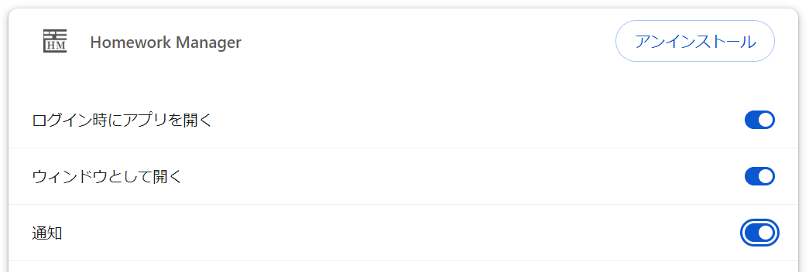

これは Homework Manager のドキュメントであり、利用可能なすべての機能に関する詳細情報が記載されています。
不明な点がある場合、サポートが必要な場合、またはアプリケーションに不具合が発生した場合、下記メールアドレスまでご連絡ください。
改善に関するアイディアや、新しい機能の追加、デザインの変更などについても、下記メールアドレスまでご連絡ください。
CWChi1@outlook.jp
「今日の課題」と「直近の課題」がリストアップして表示されます。
「Today homework」の下に今日の課題が、「Near day homework」の下に直近の課題が表示されます。
課題のリストをダブルクリックすることで、課題の詳細と、課題の締め切り日を表示することができます。
作成した課題をカレンダー上で確認できます。
上部右端から、「翌月を表示するボタン」「先月を表示するボタン」「カレンダーで表示する月を選択する」「月で表示する」「週で表示する」というようになっています。具体的な挙動に関しては、下の画像（GIF）を参考にしてください。
日付ボックスに課題が記載されている場合、日付ボックスをクリックすることで、その日の課題一覧を表示することができます。
表示された課題一覧から、課題の詳細の確認や、編集、削除を行うことができます。
日付ボックスの中で、課題がいっぱいになる場合、スクロールして課題を確認することも可能です。
具体的な挙動に関しては、下の画像（GIF）を参考にしてください。

課題の作成、編集、削除を行うセクションです。
作成した全ての課題が一覧で表示されます。
右上に「all : 」として、作成された課題の個数が表示されます。
右上のプラスボタンをクリックすることにより、以下のような課題を作成する画面が表示されます。

年月日、課題のタイトル、課題の詳細、課題のラベルカラー（デフォルトは黒）を記入して、「add homework」ボタンをクリックして課題を作成できます。「cancel」ボタンをクリックして課題の作成をキャンセルすることもできます。
課題のラベルをダブルクリックして、課題の詳細、設定した年月日を確認することができます。
課題のラベルの右端にある「編集」と「削除」のボタンをクリックして、それぞれ課題の編集、削除を行うことができます。
以上の詳しい挙動については、以下の画像（GIF）を参照してください。

追記：
先々月の課題は、自動的に削除されるようになっています。
Import or Export the Homework data で、作成した課題のデータをエクスポート、もしくは課題データをインポートできます。
Import でファイル（homework-data.json）を選択し、隣にある Import ボタンをクリックすることで課題データをインポートできます。
Export で Export a homework-data.json ボタンをクリックすると、現在ある課題のデータを homework-data.json というファイルでダウンロードします。
Help では、このアプリについての情報が記載されています。
Documentation で この課題管理アプリのドキュメント（Homework Manager Documentation）ページを開きます。
ドキュメントのページにこの課題管理アプリについての情報が記載されています。
この課題管理アプリには、その日の課題について通知を送るという機能が存在します。
しかし、このアプリページをいちいち開かなくては、通知を受け取ることができません。
そのため、課題についての通知を受け取るには、この課題管理アプリのwebページをデスクトップアプリとして使えるようにし、通知の許可とログイン時の起動を ON にする必要があります。
以下に、その方法を説明します。以下のようにすることで、タスクバーへのこのアプリのピン止めと、ログイン時の起動、課題についての通知を受け取るといったことが可能になります。
使用するブラウザ：Google Chrome
この webアプリをデスクトップアプリのようにして使用するには、上記のブラウザが必要です。
1. Google Chrome で課題管理アプリ（Homework Manager）を開く
2. 以下の画像のように、[保存と共有]、[ショートカットを作成] という順で選択し、クリックします。
ポップアップが表示されるので、「ウィンドウとして開く」にチェックします。
次のようになります。
「作成」ボタンをクリックします。
タスクバーにピン止めするか聞かれるので、「はい」をクリックします。
上の画像のように、タスクバーにピン止めされたことが確認できれば第一段階が完了です。
ここから、このアプリに通知の許可とログイン時の起動を ON にしていきます。
タスクバーにピン止めしたアプリを開いて、以下の画像のように、[右上の三点]、[アプリ情報]と選択し、クリックします。

「設定」をクリックします。
次のようなページが開かれれば良いです。
初めて開いた際には、「ログイン時にアプリを開く」と、「通知」が OFF の状態になっているはずですから、それらをクリックして ON にします。

上の画像のように、三つともすべて ON にしておく状態がベストでしょう。
以上の設定により、この課題管理アプリをあなたのタスクバーにピン止めし、ログイン時に起動するようにし、通知を許可することができました！